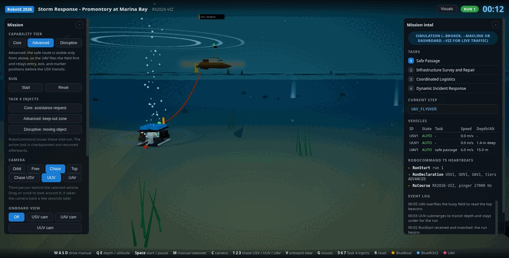

Vehicles / BlueROV2
BlueROV2
The underwater vehicle surveys the pipeline and repairs it. It is also the vehicle that forced the most interesting design decision of the season, because it has no idea where it is.
The platform
A BlueROV2 in the heavy configuration: six thrusters, an ArduSub autopilot on a Pixhawk, and a Raspberry Pi running BlueOS that carries video and MAVLink up the tether. Autonomy talks to it on one UDP endpoint while a pilot keeps QGroundControl on another, so a human can take the vehicle at any moment without the autonomy stack being torn down.
- FrameBlueROV2, 0.46 m, six thrusters
- AutopilotArduSub on Pixhawk
- CompanionRaspberry Pi, BlueOS at 192.168.2.2
- Autonomy endpointudpin 14551
- Pilot endpointudpin 14550, QGroundControl
- CameraRTSP H264, 1280x720 at 15 fps
No position underwater
ArduSub refuses GUIDED and POSHOLD with "requires position" whenever the filter has no position estimate. In software in the loop that clears about a minute after boot, once the filter starts using GPS. On the real vehicle underwater it never clears, because a BlueROV2 without a Doppler log or an acoustic positioning system has no absolute position source at all.
Rather than add hardware the budget does not have, the ground station treats depth hold as an autonomous mode for this vehicle only. The adapter asks for GUIDED first, falls back to depth hold when arming, and drives the vehicle with body frame velocity commands. Depth is closed by the autopilot, which is the one axis it can hold well without position.
What this costs and what it buys
The cost is that the survey is flown on heading and time rather than on waypoints, so the pipeline has to be reacquired visually rather than assumed. What it buys is a vehicle that is autonomous in the water on day one, with no dependency on a sensor that may not arrive.
Control interface
Two ways into the vehicle, both through the same adapter.
| Command | What it does | Used for |
|---|---|---|
| VELOCITY | Body frame velocity with yaw rate, in depth hold | The normal autonomy path: transit, survey, station keeping |
| RC_OVERRIDE | Writes the same channels a pilot's transmitter writes, 1500 neutral, 1100 to 1900 full scale | Fine positioning on the pipeline, and handing the vehicle back to a pilot mid-run |
Channels left unnamed in an override keep the pilot's stick values instead of being zeroed, which is what makes a hands-on-the-controller takeover work rather than fight the autonomy.
Pipeline survey and repair
Task 2 starts at the buoy with the green indicator, which is the one with the active pinger below it. The vehicle descends, finds the pipeline, and reports each of the five segments as intact or damaged from that end. The damaged segment shows a red light ring with a magnetic switch at its centre; holding the probe there turns the light green.
At Advanced the repaired node then flashes a colour for thirty seconds to name the resource it needs. The vehicle sends that request to the aircraft and reports completion to RoboCommand. At Disruptive the node flashes two colours, the first naming the tin and the second naming the delivery circle, and the request carries both.

Safety systems
- Onboard kill switch, with the vehicle positively buoyant when killed so it surfaces rather than sinks.
- Status light readable at about 80 m while surfaced, showing kill, manual and autonomous.
- Marked tow and lift points with a harness.
- A dedicated mounting location for the RJE ULB-350 locator beacon the event issues before any underwater vehicle enters the water, mounted vertically with the end cap down.
- Tether to the boat kept positively buoyant, under 6 m, and strong enough to recover the vehicle by pulling on it.
Nothing attached to the vehicle is allowed to float on the surface during a scoring run, and the vehicle must not breach, which is why depth hold is armed before the run rather than after the first transit.
Evidence
The 3.1.3 course flown in our simulator: start 3 m behind the gate, submerge, pass under the 2 m gate inside its width, circle the marker 10 m beyond it and return, with depth and clearance judged live against the handbook criteria. The vehicle stays below 0.3 m of the surface throughout.
Editor note, remove before submission
Add photographs of the ROV itself: the beacon mounting location, the tow and lift points, the status light and the magnetic probe. The readiness package has them; the site does not yet.